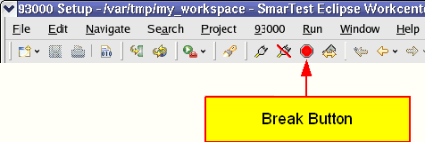
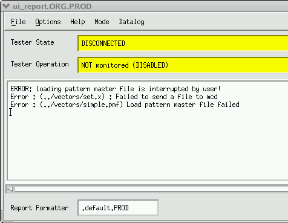

Break button
The break button is a part of the short cut bar of the SmarTest Eclipse window. The break button appears in all predefined perspectives.

When you click the Break button, you will either access the abort loading function or halt the sequencers (depending on the current operation).
- When loading a single setup file, the abort event terminates the loading job as soon as possible.
- When loading a file group, the abort event terminates loading the current file. It then cleanly quits the task of loading the file group, as shown in the following figure. Pattern master files, and setups from a testflow editor are each considered to be a type of file group.

- While running a mixed-signal test in an endless loop, the abort event halts the endless loop and halts all digital channel and analog module sequencers.